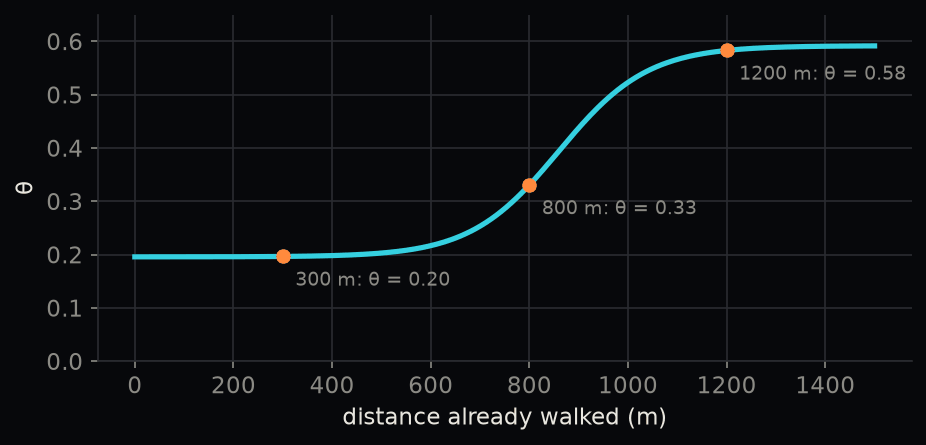

Methods
Shadows, heat, routes and the cost of a sunny or hot metre.
Pipeline
- Heights. 2022 LiDAR: ground, buildings and trees at 1 m.
- Shadows. Every hour from 8:00 to 19:00 on June 24 and July 29, 2025, a ray from every 2 m of sidewalk towards the sun: building shade if a building, bridge or the ground blocks it, tree shade if only trees do, otherwise sun. The sun of an hour sits at half past the hour before (15:00 = 14:30), as in the heat model.
- Heat. SOLWEIG turns the same heights and the weather into the UTCI, how hot it feels, at every square metre.
- Sidewalks. Each sidewalk gets, per hour, its metres of sun, tree shade and building shade, and its UTCI.
- Routes. Each walk has three routes: shortest, shadiest (shade cost) and coolest (heat cost).
The cost of a sunny metre
The shadiest walk uses the cost function of Wen et al. (2025):
\[C = L_{\text{sun}} + (1 - 0.5\,\theta)\,L_{\text{tree}} + (1 - \theta)\,L_{\text{building}} + (1 - 1.5\,\theta)\,L_{\text{indoor}}\]
A sunny metre costs 1, tree shade 1 − 0.5θ, building shade 1 − θ, an indoor metre 1 − 1.5θ. θ grows with the distance already walked, so shade matters more the longer the walk:
With θ near 0.2 for the first 500 m, a short walk only leaves the shortest route when that costs almost nothing.
The cost of a hot metre
The coolest walk keeps θ but values each metre by its UTCI:
\[C_{\text{heat}} = \sum_{\text{edges}} L\,(1 - \theta\,r), \qquad r = \frac{U_{\text{sun}} - U}{U_{\text{sun}} - U_{\text{building}}}\]
\(U\) is the sidewalk’s UTCI; \(U_{\text{sun}}\) and \(U_{\text{building}}\) are the city medians in sun and in building shade at that hour (15:00: about 45.3 and 40.5 °C). A typically sunny metre costs 1 and a typically building-shaded one 1 − θ, as in the shade cost; everything in between follows its UTCI (\(r\) kept between −1 and 1.5). Indoor passages have no UTCI, so the coolest walk stays outdoors.
Walks home from transit
Every home within 1.2 km of a frequent stop is one walk, stop to home (431,114 walks). Results are reported by length (under 300 m, 300–800 m, 800–1,200 m), since short walks rarely have an alternative, and for rapid transit and buses separately.
The direction does not matter: walking home to stop instead gives a mean sun reduction of 13.8% against 13.8% (500 walks, correlation 0.99).
Metrics
| Metric | Definition |
|---|---|
| Sun | |
| Sun share | metres in the sun on the shortest walk ÷ its length |
| Sun reduction | (sun on shortest − sun on shadiest) ÷ sun on shortest |
| Weighted exposure reduction | (C of shortest − C of shadiest) ÷ C of shortest |
| No cooler option | the shadiest walk avoids less than 2% of the sun |
| Heat | |
| UTCI of a walk | length-weighted mean UTCI along it, in °C |
| UTCI reduction | UTCI of the shortest − UTCI of the coolest (or shadiest) walk, in °C |
| Extreme heat stress | metres with UTCI ≥ 46 °C |
| Both | |
| Detour | (length of the walk − shortest length) ÷ shortest length |
| Indoor Contribution Index | (1 − Lshadiest ÷ Lshortest, outdoor) × indoor share of the shadiest path’s shade (Wen et al. 2025) |
Weighted exposure falls about a tenth as much as sun: with θ near 0.2, each metre of sun avoided lowers C by only 0.15–0.2 m.
Indoor scenarios (University City)
Mapped entrances are linked to the nearest sidewalk; passages through buildings count as indoor walking. Three cases: outdoor only, plus buildings open without a Penn ID, plus all mapped buildings. The shortest route is always the outdoor one.
How we checked
The five stations with the largest sun reduction were checked on aerial photos; checks of the heat model are in the technical notes.